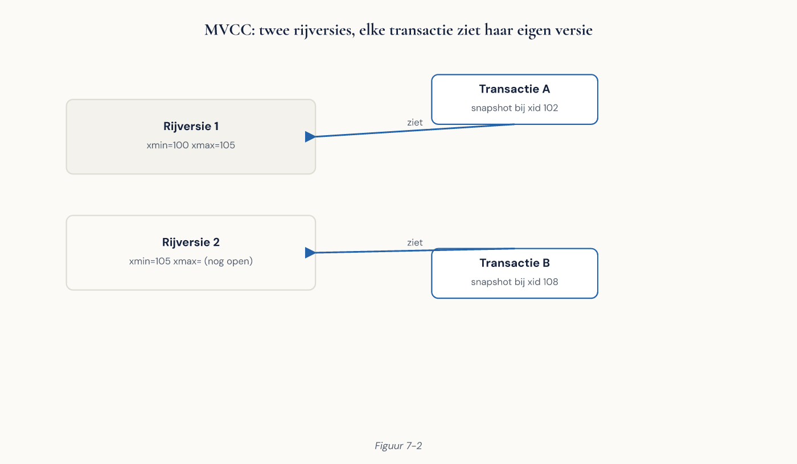

Deel 7 — Transacties, ACID en MVCC
Cursus Databasemanagement — Niveau 1: Fundament Deelnemersreader | Dagdeel 7 van 10 Aansluiting: EDB PostgreSQL Associate — domeinen “Architecture” en “Concurrency”
Inhoud
- Leerdoelen
- Het probleem dat nog openstaat
- Wat een transactie is
- BEGIN, COMMIT, ROLLBACK
- Savepoints
- ACID, nu concreet
- De vier anomalieën
- Isolatieniveaus
- MVCC: hoe PostgreSQL het oplost
- Transactie-ID’s en zichtbaarheid
- Locks
- Rijlocks bij UPDATE
- SELECT … FOR UPDATE
- Deadlocks
- De lost update in de praktijk
- Optimistisch versus pessimistisch vergrendelen
- VACUUM en het prijskaartje van MVCC
- Transactiegrenzen in applicaties
- Foutafhandeling
- Veelgemaakte fouten
- Aansluiting op de certificering
- Kernbegrippen
1. Leerdoelen
Na dit deel kun je:
- uitleggen wat een transactie is en waar de grenzen ervan horen te liggen;
- transacties beheren met
BEGIN,COMMIT,ROLLBACKen savepoints; - de vier ACID-eigenschappen koppelen aan het mechanisme dat ze in PostgreSQL waarmaakt;
- de vier anomalieën herkennen en zeggen welk isolatieniveau ze uitsluit;
- het isolatieniveau kiezen dat bij een bedrijfsproces past en die keuze motiveren;
- uitleggen hoe MVCC gelijktijdigheid regelt en welke prijs daarvoor betaald wordt;
- een lost update reproduceren en op twee manieren voorkomen;
- een deadlock herkennen, verklaren en voorkomen;
- de rol van
VACUUMuitleggen en de gevolgen van het uitzetten van autovacuum benoemen.
2. Het probleem dat nog openstaat
Uit deel 1, de zes problemen van de schil bij Meridiaan:
“Twee collega’s werken 's middags in hetzelfde Excel-bestand met premiemutaties. Om 17:10 blijkt het werk van de een verdwenen.”
Vijf van de zes problemen hebben we inmiddels opgelost: redundantie en inconsistentie met normalisatie (deel 5), integriteitsbewaking met constraints (deel 6), toegangsbeheer volgt in deel 9. Dit is het probleem dat overblijft, en het is het lastigste van de zes — omdat het pas optreedt als er meerdere mensen tegelijk werken, en dus zelden op een testomgeving.
De naam ervan is lost update. In paragraaf 15 reproduceren we hem in twee psql-vensters, en daarna lossen we hem op.
3. Wat een transactie is
Een transactie is een groep bewerkingen die als één ondeelbaar geheel wordt uitgevoerd: alles slaagt, of niets slaagt.
Het schoolvoorbeeld bij Meridiaan is de waardeoverdracht uit deel 1: bedrag af bij fonds A, bedrag bij bij fonds B. Als de tweede stap mislukt, mag de eerste niet blijven staan.
Maar transacties zijn niet alleen voor geld. Elke bewerking die meerdere rijen of tabellen raakt en waarbij een tussentoestand ongeldig is, hoort in een transactie:
- een deelnemer aanmaken met zijn eerste dienstverband;
- een adres beëindigen en het nieuwe adres openen (deel 6: die twee handelingen samen mogen nooit een gat of overlap opleveren);
- een premienota vaststellen en de bijbehorende journaalpost wegschrijven.
In PostgreSQL is elke opdracht al een transactie. Type je een losse UPDATE, dan draait die impliciet tussen een BEGIN en een COMMIT. Dat heet autocommit. Zodra je meerdere opdrachten wilt samenvoegen, maak je de transactie expliciet.
4. BEGIN, COMMIT, ROLLBACK
BEGIN;
UPDATE rekening SET saldo = saldo - 1000 WHERE fonds = 'A';
UPDATE rekening SET saldo = saldo + 1000 WHERE fonds = 'B';
COMMIT;
Gaat er iets mis, dan:
ROLLBACK;
Alles sinds BEGIN wordt teruggedraaid alsof het nooit is gebeurd.
De aborted-toestand. Treedt er binnen een transactie een fout op, dan gaat PostgreSQL in een bijzondere toestand:
ERROR: current transaction is aborted, commands ignored until end of transaction block
Alle volgende opdrachten worden geweigerd tot je ROLLBACK (of COMMIT, die dan als rollback werkt) uitvoert. Dat voelt streng maar is precies goed: het voorkomt dat je verder werkt op een toestand die je niet kent. Deelnemers die dit voor het eerst tegenkomen, denken vaak dat hun sessie kapot is. Dat is hij niet — hij beschermt je.
Nuttige commando’s:
| Commando | Doet |
|---|---|
BEGIN; |
Start een transactie |
COMMIT; |
Legt vast |
ROLLBACK; |
Draait terug |
SELECT txid_current(); |
Toont het transactie-ID |
\set AUTOCOMMIT off |
psql-instelling: alles expliciet |
5. Savepoints
Een savepoint is een terugvalpunt binnen een transactie:
BEGIN;
INSERT INTO plaats (naam) VALUES ('Utrecht');
SAVEPOINT voor_import;
INSERT INTO plaats (naam) VALUES ('Utrecht'); -- fout: al aanwezig
ROLLBACK TO SAVEPOINT voor_import; -- alleen dit stukje terug
INSERT INTO plaats (naam) VALUES ('Amersfoort');
COMMIT; -- Utrecht en Amersfoort zijn opgeslagen
Nuttig bij importscripts waarin één mislukte rij niet de hele partij mag laten sneuvelen. Wees er wel spaarzaam mee: elk savepoint kost geheugen en administratie, en duizenden savepoints in één transactie zijn een bekende oorzaak van prestatieproblemen.
6. ACID, nu concreet
Deel 1 introduceerde ACID als belofte. Nu het mechanisme erachter.
| Eigenschap | Betekent | Waargemaakt door |
|---|---|---|
| Atomicity | Alles of niets | Transactiebeheer + WAL (deel 2) |
| Consistency | Geldige toestand in, geldige toestand uit | Constraints (deel 6) |
| Isolation | Gelijktijdige transacties storen elkaar niet | MVCC + locks (dit deel) |
| Durability | Bevestigd is bevestigd | WAL met fsync (deel 2) |
Merk op dat de C de enige is die jij invult. Atomiciteit, isolatie en duurzaamheid regelt de database; consistentie is de verzameling regels die jij in deel 6 hebt vastgelegd. Een database zonder constraints is nog steeds ACID — hij bewaakt dan alleen niets.
Dat is een nuttige zin voor een gesprek met een leverancier die zegt dat zijn systeem “volledig ACID” is.
7. De vier anomalieën
Zonder isolatie kunnen vier soorten problemen optreden. Je moet ze kunnen benoemen én herkennen.
Dirty read. Transactie A leest een wijziging van B die nog niet is vastgelegd — en B draait daarna terug. A heeft gerekend met gegevens die nooit hebben bestaan.
Non-repeatable read. A leest een rij, B wijzigt en commit die rij, A leest hem opnieuw en krijgt een andere waarde. Binnen één transactie is dezelfde vraag twee keer anders beantwoord.
Phantom read. A telt de rijen die aan een voorwaarde voldoen, B voegt een rij toe die er ook aan voldoet en commit, A telt opnieuw en krijgt een ander aantal. Niet een gewijzigde rij, maar een nieuwe.
Serialization anomaly. Subtieler: elke transactie is op zichzelf correct, maar het resultaat komt niet overeen met welke volgorde van uitvoeren dan ook. Twee transacties die elk controleren “is er nog minstens één beschikbaar” en beide besluiten er een te nemen — met als uitkomst nul beschikbaar, wat geen enkele seriële volgorde had opgeleverd.

8. Isolatieniveaus
De SQL-standaard kent vier niveaus, gedefinieerd naar welke anomalieën ze toestaan.
| Niveau | Dirty read | Non-repeatable | Phantom | Serialization anomaly |
|---|---|---|---|---|
| Read uncommitted | Toegestaan | Toegestaan | Toegestaan | Toegestaan |
| Read committed | Nee | Toegestaan | Toegestaan | Toegestaan |
| Repeatable read | Nee | Nee | Nee* | Toegestaan |
| Serializable | Nee | Nee | Nee | Nee |
Drie dingen die specifiek voor PostgreSQL gelden:
- Read uncommitted bestaat niet. Vraag je erom, dan krijg je read committed. Dirty reads zijn in PostgreSQL onmogelijk — een gevolg van MVCC.
- De standaard is read committed. Elke opdracht ziet een momentopname van het moment waarop díé opdracht begon, niet van het begin van de transactie.
- Repeatable read voorkomt in PostgreSQL óók phantom reads (vandaar het sterretje), strenger dan de standaard eist. Dat komt eveneens door MVCC: de hele transactie werkt op één momentopname.
Instellen:
BEGIN ISOLATION LEVEL REPEATABLE READ;
-- of
SET TRANSACTION ISOLATION LEVEL SERIALIZABLE;
Welk niveau kies je?
- Read committed voor vrijwel al het gewone werk. Snel, weinig conflicten.
- Repeatable read als een transactie meerdere keren leest en een consistent beeld nodig heeft — een rapportage die over meerdere tabellen optelt, bijvoorbeeld. Zonder dit niveau kunnen de deeltotalen uit verschillende momenten komen en niet optellen tot het geheel.
- Serializable als correctheid boven doorvoer gaat en de logica te subtiel is om met locks te bewaken.
De prijs van de strengere niveaus: transacties kunnen worden afgebroken met een serialisatiefout:
ERROR: could not serialize access due to concurrent update
Dat is geen bug maar het ontwerp. Je applicatie moet die fout opvangen en de transactie opnieuw proberen. Wie serializable inschakelt zonder retry-logica te bouwen, ruilt een zeldzame stille fout in voor een frequente luidruchtige. Dat is meestal een verbetering, maar alleen als iemand de foutmelding afhandelt.
9. MVCC: hoe PostgreSQL het oplost
Deel 2 gaf de samenvatting; hier de werking.
Het kernidee: een UPDATE wijzigt de bestaande rij niet. PostgreSQL schrijft een nieuwe versie van de rij en markeert de oude als geldig tot een bepaald transactiemoment. Een DELETE markeert de rij alleen als verwijderd; hij blijft fysiek staan.
Elke rijversie draagt twee verborgen kolommen:
xmin— het transactie-ID dat deze versie heeft gemaakt;xmax— het transactie-ID dat deze versie heeft beëindigd (0 als hij nog geldig is).
Je kunt ze gewoon opvragen:
SELECT xmin, xmax, * FROM plaats;
Een transactie ziet een rijversie als: xmin is vastgelegd en zichtbaar voor mij, en xmax is dat niet. Dat is de hele zichtbaarheidsregel, en daaruit volgt:
Lezers blokkeren geen schrijvers, en schrijvers blokkeren geen lezers.
Een lezer heeft de oude versie nog beschikbaar terwijl een schrijver de nieuwe maakt. Niemand hoeft te wachten.
Het praktische gevolg dat je moet kennen: een lang lopende rapportagequery legt in PostgreSQL de administratie niet stil. In systemen met vergrendelend lezen doet hij dat wel. Dit is een van de belangrijkste redenen dat PostgreSQL goed presteert onder gemengde belasting — en het is een argument dat je in het gesprek uit deel 1 kunt gebruiken.

10. Transactie-ID’s en zichtbaarheid
Elke transactie die iets wijzigt, krijgt een oplopend transactie-ID (XID). Een momentopname (snapshot) bestaat uit: welke XID’s waren al vastgelegd toen ik begon, en welke waren nog bezig.
Onder read committed neemt elke opdracht een nieuwe momentopname. Vandaar dat je binnen één transactie twee keer een ander antwoord kunt krijgen — de non-repeatable read.
Onder repeatable read en serializable neemt de hele transactie één momentopname bij de eerste opdracht. Alles wat je daarna leest, komt uit datzelfde bevroren beeld.
Waarom lange transacties schadelijk zijn. Zolang een transactie loopt, moeten alle rijversies die zij mogelijk nog nodig heeft, bewaard blijven. Een transactie die uren openstaat — vaak een applicatie die een BEGIN deed en toen op gebruikersinvoer wachtte — verhindert het opruimen van dode rijversies in de héle database. De tabellen groeien, de query’s worden trager, en de oorzaak zit in een sessie die niets doet.
pg_stat_activity (deel 2) toont dit:
SELECT pid, state, now() - xact_start AS duur, query
FROM pg_stat_activity
WHERE state <> 'idle'
ORDER BY xact_start;
De toestand idle in transaction met een lange duur is het signaal. Onthoud die term; in niveau 2 is het een van de eerste dingen die je bij een prestatieprobleem opzoekt.
11. Locks
MVCC lost het lezen op. Voor schrijven zijn locks nodig: twee transacties mogen niet tegelijk dezelfde rij wijzigen.
PostgreSQL kent locks op verschillende niveaus. De belangrijkste tabellocks:
| Lock | Genomen door | Conflicteert met |
|---|---|---|
ACCESS SHARE |
SELECT |
Alleen ACCESS EXCLUSIVE |
ROW SHARE |
SELECT … FOR UPDATE |
EXCLUSIVE, ACCESS EXCLUSIVE |
ROW EXCLUSIVE |
INSERT, UPDATE, DELETE |
SHARE en zwaarder |
SHARE |
CREATE INDEX |
Schrijvers |
ACCESS EXCLUSIVE |
ALTER TABLE, DROP, TRUNCATE, VACUUM FULL |
Alles |
Dat laatste verklaart de waarschuwing uit deel 6: een ALTER TABLE die de tabel herschrijft, houdt een ACCESS EXCLUSIVE-lock vast en laat álles wachten — ook gewone SELECTs.
Wie op een lock wacht, zie je hier:
SELECT pid, wait_event_type, wait_event, query
FROM pg_stat_activity
WHERE wait_event_type = 'Lock';
Een belangrijk detail over ALTER TABLE: de opdracht wacht zélf ook op de lock. Staat er één lang lopende SELECT op de tabel, dan wacht je ALTER TABLE daarop — en alle nieuwe query’s gaan intussen achter de ALTER TABLE in de rij staan. Eén trage query kan zo de hele tabel blokkeren. Dit is de belangrijkste reden om migraties met lock_timeout uit te voeren; niveau 2 werkt dat uit.
12. Rijlocks bij UPDATE
Een UPDATE neemt een lock op de gewijzigde rijen tot het eind van de transactie.
Sessie 1 Sessie 2
BEGIN;
UPDATE plaats SET naam='X'
WHERE plaats_id=1;
BEGIN;
UPDATE plaats SET naam='Y'
WHERE plaats_id=1;
-- wacht...
COMMIT;
-- gaat nu door
Sessie 2 wacht tot sessie 1 klaar is. Onder read committed leest sessie 2 daarna de nieuwe waarde en past zijn wijziging daarop toe. Onder repeatable read krijgt sessie 2 een serialisatiefout, omdat de rij is veranderd sinds haar momentopname.
Dat verschil is belangrijk en komt terug in paragraaf 15.
13. SELECT … FOR UPDATE
Soms wil je een rij vergrendelen op het moment dat je hem leest, omdat je van plan bent hem te wijzigen:
BEGIN;
SELECT saldo FROM rekening WHERE fonds = 'A' FOR UPDATE;
-- niemand anders kan deze rij nu wijzigen
UPDATE rekening SET saldo = saldo - 1000 WHERE fonds = 'A';
COMMIT;
Varianten:
| Vorm | Doet |
|---|---|
FOR UPDATE |
Volledige rijlock |
FOR NO KEY UPDATE |
Lichter; staat verwijzingen toe |
FOR SHARE |
Anderen mogen lezen, niet wijzigen |
FOR UPDATE NOWAIT |
Foutmelding in plaats van wachten |
FOR UPDATE SKIP LOCKED |
Slaat vergrendelde rijen over |
SKIP LOCKED is het gereedschap voor werkverdeling: meerdere verwerkers halen elk een andere onverwerkte mutatie op zonder elkaar te blokkeren.
SELECT * FROM mutatie
WHERE verwerkt_op IS NULL
ORDER BY aangemeld_op
LIMIT 10
FOR UPDATE SKIP LOCKED;
Dat patroon is precies wat Meridiaan nodig heeft om de mutatieverwerking over meerdere processen te verdelen. Zonder SKIP LOCKED staan die processen op elkaar te wachten of pakken ze dezelfde mutaties.
14. Deadlocks
Twee transacties wachten op elkaar:
Sessie 1 Sessie 2
UPDATE rij A UPDATE rij B
UPDATE rij B ← wacht op 2 UPDATE rij A ← wacht op 1
Geen van beide kan door. PostgreSQL detecteert dit automatisch (standaard na een seconde), kiest een slachtoffer en breekt die transactie af:
ERROR: deadlock detected
DETAIL: Process 1234 waits for ShareLock on transaction 5678...
Voorkomen:
- Benader rijen altijd in dezelfde volgorde. Als beide sessies eerst A en dan B doen, kan er geen cyclus ontstaan. Dit is verreweg de belangrijkste maatregel, en hij hoort in de afspraken van je ontwikkelteam.
- Houd transacties kort. Hoe korter de lock, hoe kleiner het venster.
- Vergrendel niet meer dan nodig.
- Vang de fout op en probeer opnieuw. Een deadlock is bij gelijktijdige belasting nooit volledig uit te sluiten.
Een deadlock is geen ramp — de database lost hem zelf op. Maar frequente deadlocks wijzen op een ontwerpprobleem, meestal op punt 1.
15. De lost update in de praktijk
Nu het probleem uit deel 1. Reproduceer het zelf in twee psql-vensters.
De situatie: twee medewerkers passen het jaarsalaris van hetzelfde dienstverband aan. De een verhoogt met 2.000, de ander met 1.000.
Sessie 1 Sessie 2
BEGIN;
SELECT jaarsalaris FROM dienstverband
WHERE dienstverband_id = 1; -- 50.000
BEGIN;
SELECT jaarsalaris FROM dienstverband
WHERE dienstverband_id = 1; -- 50.000
UPDATE dienstverband
SET jaarsalaris = 52000
WHERE dienstverband_id = 1;
COMMIT;
UPDATE dienstverband
SET jaarsalaris = 51000
WHERE dienstverband_id = 1;
COMMIT;
Eindresultaat: 51.000. De verhoging van sessie 1 is verdwenen zonder enige foutmelding. Precies het Excel-probleem uit deel 1, nu in een echte database — want een database beschermt hier niet vanzelf tegen.
Drie oplossingen:
1. Reken in de database, niet in de applicatie.
UPDATE dienstverband SET jaarsalaris = jaarsalaris + 2000 WHERE dienstverband_id = 1;
De tweede sessie wacht op de rijlock, leest daarna de nieuwe waarde en telt daar bij op. Resultaat: 53.000, wat beide bedoelden. Dit is de eenvoudigste oplossing en werkt wanneer de bewerking als optelling uit te drukken is.
2. Vergrendel bij het lezen.
BEGIN;
SELECT jaarsalaris FROM dienstverband WHERE dienstverband_id = 1 FOR UPDATE;
-- de ander wacht nu al hier
UPDATE dienstverband SET jaarsalaris = 52000 WHERE dienstverband_id = 1;
COMMIT;
Pessimistisch: je claimt de rij voordat je gaat rekenen.
3. Optimistisch vergrendelen met een versiekolom.
UPDATE dienstverband
SET jaarsalaris = 52000, versie = versie + 1
WHERE dienstverband_id = 1 AND versie = 7;
Levert dit nul gewijzigde rijen op, dan heeft iemand anders de rij intussen aangepast en moet je opnieuw beginnen — meestal met een melding aan de gebruiker: “dit record is gewijzigd door een ander, ververs en probeer opnieuw.”
Of gebruik repeatable read. Onder dat isolatieniveau krijgt sessie 2 een serialisatiefout in plaats van stil te overschrijven. Dat lost het probleem ook op, mits de applicatie de fout opvangt.
16. Optimistisch versus pessimistisch vergrendelen
Pessimistisch (FOR UPDATE) |
Optimistisch (versiekolom) | |
|---|---|---|
| Aanpak | Claim de rij vooraf | Controleer bij het schrijven |
| Goed bij | Veel conflicten, korte bewerkingen | Weinig conflicten, lange bedenktijd |
| Kosten | Anderen wachten | Werk opnieuw doen bij conflict |
| Gebruikerservaring | “Even wachten” | “Iemand was je voor” |
De doorslaggevende overweging bij webtoepassingen: je kunt een databaselock niet vasthouden terwijl een gebruiker een formulier invult. Die transactie zou minuten openstaan — met alle gevolgen uit paragraaf 10. Voor het deelnemersportaal van Meridiaan is optimistisch vergrendelen daarom de enige werkbare keuze; voor een kortlopende batchverwerking is FOR UPDATE prima.
17. VACUUM en het prijskaartje van MVCC
Elke UPDATE en DELETE laat een dode rijversie achter. Zonder opruiming groeit de tabel onbeperkt — table bloat.
VACUUM doet drie dingen:
- Ruimt dode rijversies op en geeft de ruimte vrij voor hergebruik binnen de tabel.
- Werkt de statistieken bij die de planner gebruikt (deel 2, deel 8).
- Voorkomt het aflopen van de transactie-ID-teller.
Dat derde punt verdient uitleg. De XID-teller is eindig. Elke rijversie bewaart de XID die hem maakte; zonder opruiming zou de teller na verloop van tijd omlopen en zouden oude rijen “in de toekomst” lijken te liggen — en daarmee onzichtbaar worden. VACUUM bevriest oude rijen om dat te voorkomen. Gebeurt dat te lang niet, dan stopt PostgreSQL met schrijven om gegevensverlies te voorkomen.
Dat is geen theoretisch scenario. Het is de bekendste manier om een PostgreSQL-productieomgeving stil te leggen, en het begint altijd hetzelfde: iemand zet autovacuum uit omdat het I/O kost.
| Variant | Doet | Lock |
|---|---|---|
VACUUM |
Ruimt op, ruimte blijft in de tabel | Licht; tabel blijft bruikbaar |
VACUUM ANALYZE |
Idem + statistieken | Licht |
VACUUM FULL |
Herschrijft de tabel, geeft ruimte terug aan het OS | ACCESS EXCLUSIVE — alles wacht |
ANALYZE |
Alleen statistieken | Licht |
VACUUM FULL is geen routineonderhoud. Het herschrijft de tabel volledig, heeft tijdelijk twee keer de ruimte nodig en blokkeert alles. Gebruik het alleen na een eenmalige grote opruiming, in een onderhoudsvenster.
Autovacuum draait permanent op de achtergrond en doet dit werk vanzelf. De afstelling ervan hoort in niveau 2. De enige boodschap voor nu: laat het aan staan.
18. Transactiegrenzen in applicaties
Waar begint en eindigt een transactie? Dit is een ontwerpvraag, geen technische.
Vuistregels:
- Eén transactie per bedrijfshandeling. Een deelnemer aanmaken met zijn dienstverband is één handeling, dus één transactie.
- Geen gebruikersinteractie binnen een transactie. Nooit
BEGINdoen, een formulier tonen en op de gebruiker wachten. - Geen externe aanroepen binnen een transactie als het te vermijden is. Een webservice die traag reageert, houdt je transactie open en daarmee locks vast.
- Zo kort mogelijk, maar niet korter. Een transactie opsplitsen “voor de prestaties” verbreekt de atomiciteit die je juist wilde.
Een klassieke fout bij Meridiaan zou zijn: de mutatieverwerking opent een transactie, roept de basisregistratie aan voor een adrescontrole, en wacht. Bij een trage externe dienst staan er dan tientallen transacties open, groeit de bloat en loopt de verwerking vast. De oplossing is de externe aanroep buiten de transactie te doen en het resultaat daarna in een korte transactie te verwerken.
19. Foutafhandeling
Een transactie kan om drie redenen mislukken:
- Constraintschending (deel 6) — voorspelbaar, hoort in de applicatielogica.
- Serialisatiefout — hoort opgevangen en opnieuw geprobeerd te worden.
- Deadlock — idem.
Voor 2 en 3 geldt hetzelfde patroon: vang de fout, wacht kort (met een oplopende wachttijd bij herhaling), probeer opnieuw, en geef na een paar pogingen op met een begrijpelijke melding.
Wat je niet doet: de foutmelding onderdrukken en doorgaan. Een genegeerde serialisatiefout betekent dat een bedrijfshandeling niet is uitgevoerd terwijl de gebruiker denkt van wel.
20. Veelgemaakte fouten
| Fout | Gevolg | Oplossing |
|---|---|---|
| Lezen, rekenen in de applicatie, terugschrijven | Lost update | Rekenen in de UPDATE, of vergrendelen |
BEGIN en dan op de gebruiker wachten |
idle in transaction, bloat, locks |
Transactiegrens verleggen |
| Autovacuum uitzetten | Bloat, uiteindelijk schrijfblokkade | Aan laten |
VACUUM FULL als routine |
Downtime | Alleen na eenmalige opruiming |
| Rijen in wisselende volgorde benaderen | Deadlocks | Vaste volgorde afspreken |
serializable zonder retry-logica |
Frequente zichtbare fouten | Retry inbouwen |
| Externe aanroep binnen een transactie | Lange locks | Buiten de transactie |
| Duizenden savepoints in één transactie | Prestatieverlies | Partij opdelen |
21. Aansluiting op de certificering
Voor de Associate-certificering paraat:
- de vier ACID-eigenschappen en het mechanisme per eigenschap;
- de vier anomalieën en welk isolatieniveau ze uitsluit;
- dat PostgreSQL geen read uncommitted kent en dat repeatable read hier ook phantoms uitsluit;
- de werking van MVCC met
xmin/xmax; - de belangrijkste locktypen en welke opdrachten ze nemen;
- het doel van
VACUUM, inclusief XID-wraparound; - het verschil tussen
VACUUMenVACUUM FULL.
Raadpleeg de actuele EDB-blauwdruk; deze cursus is voorbereiding, geen vervanging van het officiële examenmateriaal.
22. Kernbegrippen
Transactie — groep bewerkingen die geheel of niet wordt uitgevoerd.
Savepoint — terugvalpunt binnen een transactie.
Isolatieniveau — mate waarin gelijktijdige transacties elkaar kunnen beïnvloeden.
Dirty read / non-repeatable read / phantom read / serialization anomaly — de vier anomalieën.
MVCC — meerdere rijversies naast elkaar voor gelijktijdigheid zonder blokkeren.
xmin / xmax — verborgen kolommen die de zichtbaarheid van een rijversie bepalen.
Snapshot — momentopname van welke transacties zichtbaar zijn.
Lost update — een wijziging die stil wordt overschreven door een andere sessie.
Optimistisch vergrendelen — conflict pas bij het schrijven detecteren, met een versiekolom.
Pessimistisch vergrendelen — de rij claimen bij het lezen, met FOR UPDATE.
Deadlock — twee transacties die op elkaar wachten.
Bloat — ruimte ingenomen door niet-opgeruimde dode rijversies.
XID-wraparound — het aflopen van de transactie-ID-teller; voorkomen door vacuum.
idle in transaction — sessie met een openstaande transactie die niets doet.
Volgende deel: indexen en views. Je hebt nu een database die correct is onder gelijktijdige belasting. Volgende keer maken we hem snel — en leer je waarom “traag” bijna nooit betekent wat mensen denken.